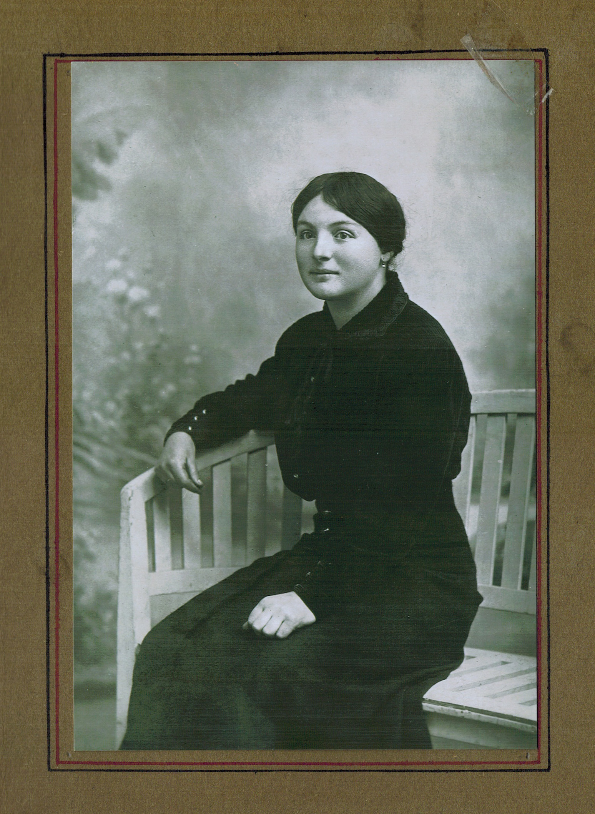
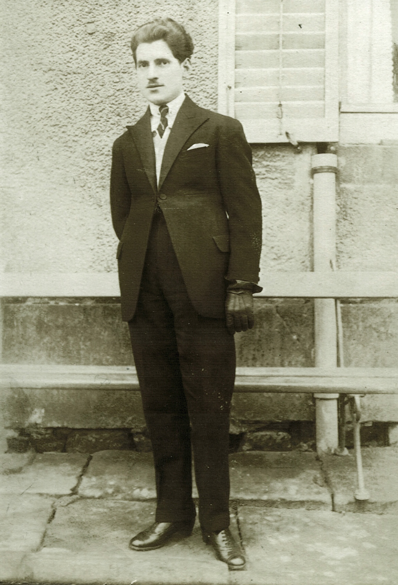
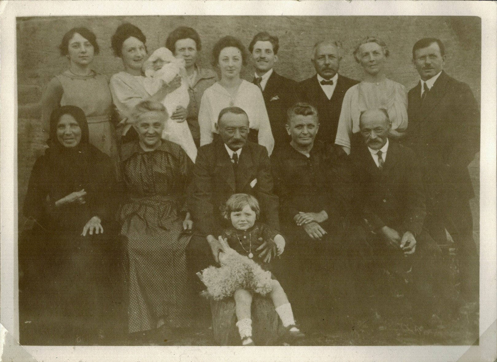
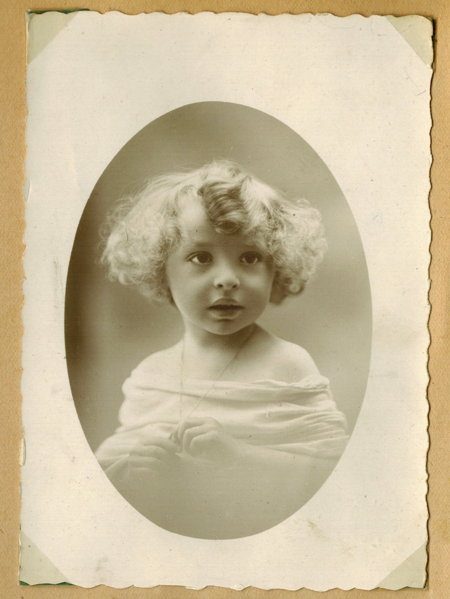

Intro:
From the Blue Mountains
of the French Vosges
The beautiful Vosges mountains of northeastern France are home to fresh spring waters, evergreen ringed lakes, and the misty blue tones of rounded peaks hiding one behind the other in the distance. As part of the province of Lorraine, this region has shared with Alsace a history of disputed rule between France and Germany. Interestingly, the chaos and disruption of war in this region not only allowed my maternal grandparents’ paths to cross during the First World War, but also brought my parents together during World War II.
My mother’s mother, christened Marguerite Daniel, was the daughter of Aristide Daniel and Marie Demenge Daniel, owners of a well-loved restaurant and butcher shop in the small town of Deyvillers, near Epinal in the department of the Vosges.
Marguerite (Daniel) Paoli
In the following passage from my mother’s mémoires, she relates her father’s story and his meeting his future wife.
Albert Paoli
“My father was born in Bastia (the capital of Corsica), the youngest of five children. He was handsome, intelligent and full of life and I was told that lots of girls were interested in him. But the war (WWI) broke out and as soon as he was old enough, he volunteered to go to the St. Cyr Military Academy. There, after a short time of training, he was found ready and he was sent to the front in the North of France. He was seriously wounded at the battle of the Somme in 1916. For 18 months, his family received no news from him and grieved, thinking he had been killed. During those months, however, he was being transferred from one hospital to another, and was fighting for his life. He had lost one lung and it was a miracle that he recovered. When he did, he was sent to the Vosges to join some back-up troops, specifically to Deyvillers where he was destined to meet his future wife, my mother.”
“My mother was engaged at that time to a young teacher from a nearby village. She broke his heart when she fell in love with my father and broke her engagement. In April 1919, a few months after the war had ended, she and my father got married in Deyvillers, walking out of the City hall under the raised swords of the Chasseurs Alpins forming the honor line. My father, Albert Paoli, had just been promoted to second-lieutenant of the regiment.”
“The newly married couple left for Marseilles where I was later born. My father had left the army and was studying at the University of Aix-en-Provence to enter the income tax office of the French government. He passed his exams and was appointed in Rambervillers, not far from Deyvillers, as contrôleur des contributions directes, the youngest such appointee in all of France. My mother hated life in Marseilles and was delighted to eventually come back to her beloved Vosges. My little brother Jean-Marie was born in Rambervillers in March 1921.”
PAOLI FAMILY, ca. 1921. Front row. Far left: Angèle Paoli, Mother of Albert Paoli. Center: Aristide Daniel, holding Antoinette Paoli. Fourth from left: Marie Demenge. Back row. Second from left: Marguerite Paoli holding Jean-Marie Paoli. Fifth from left: Albert Paoli.
“At 32, Albert Paoli was the youngest inspector of the Contributions Directes in all France. He was to assume his new position in Amiens in the North of France in the summer of 1928. My mother was then expecting another baby and she did not want to move away from Deyvillers. So my father asked for his assignment to be changed to Epinal and his request was granted. My parents decided to go to Corsica to visit his mother and let her enjoy her grandchildren, Jean-Marie, José, and myself, against the advice of his doctor who had found him very tired after working for his exams. Since losing one of his lungs in the war, my father’s health had been very poor and his resistance very low. He did not want to change his plans, and the family left for Corsica, Canaggia, a hamlet in the mountains near Bastia.”
Jean-Marie Paoli, ca. 1923
“An epidemic of dysentery broke out and my little brother, Jean-Marie, became sick. He had always been a delicate child and he died after a fairly short illness on August 28th 1928. What a terrible shock this was for my parents. Shortly thereafter, my father also became ill. We took the first ship to get back to Marseilles where my father was under the care of the family doctor, but his morale was very low. He blamed himself for the death of my little brother and though he seemed to be recovering from the dysentery, he died of heart failure on September 12, 1928, at the age of 32. My brother, José and I both retain vivid memories of our goodbyes to our father on his death bed. We were too young to realize at the time what a treasure of kindness, intelligence and loving care we were losing. The course of our lives was to be completely altered from his tragic early death.”